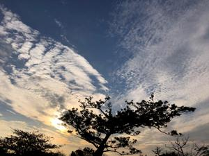
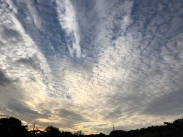
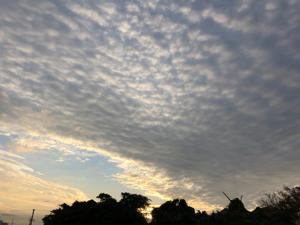
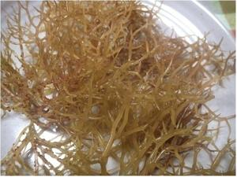
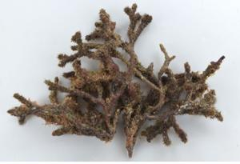
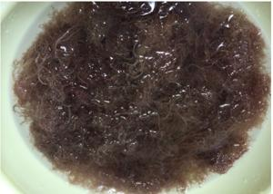
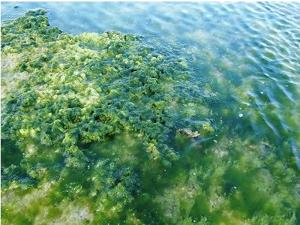

うるがいの話 ある日
最新: 海藻【うるがいの話 ある日】とは 一日だけのプログです
『うるがいの話』の最新一日だけのプログで、通信料が少なく経済的だ。カニの画像をクリックすると全ての日付が載る『うるがいの話』サイトを表示します
|
|
【うるがいの話】 うるがい(ｳﾙｶﾞｲ urugai)とは、『もずくがに』の名前でとても大きくなります。 |
|---|---|
|
|
【カミマヤーの話】 猫のことを方言でマヤーといいます。カミマヤーとは、神の猫のことです。 |
|
【タナガーの話】 たながー（ﾀﾅｶﾞｰtanagaa）とは手長えびのことで、何種類かあり大きいのは車 エビぐらいになります。 |

|
【ぶながぁの話】 ぶながー(bunagaa)とは、赤い髪の毛、赤い身体、そして身長は１ｍ２０ｃｍ ぐらい、川の蟹を食べているの目撃された。場所は沖縄県国頭郡大宜味村のと ある村僕の隣近所に住んでいる爺さんから、聞いた話です。 |
|
|
【ギーマの話】 ギーマ(giima)とは、山原の里山に咲くスズランに似た、 花を付けます。実は食べられます、 気が付くと口の周りが紫になっています。 |
2021年12月21日 (火）海藻
15:35
  
『ナツコ 沖縄密貿易の女王』の本で、ナチョーラ（海人草）という海藻の名
前をひさびさに見る。小さい頃は実によく海藻をたべた（食べされた）、モー
イ（モズク）、アーサ（(ヒトエかいそうグサ)、ここまでは今でも食べるが、
モーイ（イバラノリ）は実家でモーイ豆腐として作っていた、ヨメも名護のそ
ば屋に乾燥したものを買って来てはごくたまに実家のマネをしてモーイ豆腐を
作った。そしてスーナ（クビレオゴノリ）は小学生まではよく食べた、とくに
部落のオバーをダットサンの荷台に乗せて、金武の海岸へ遠征しモーイと一緒
に大量に採ってきたとき。ナチョーラ（海人草）は、叔父さんは薬だよと言っ
て食べていたが、私は食べた記憶がない。いま考えると、とても健康的な食べ
物を日常的に食べていたのだと思う。フと、皆で遠征にいった金武の海岸とは
どこだったんだろう、確認しようにも聞く人がいなくなってしまった。
スーナ（クビレオゴノリ）

ナチョーラ（海人草）

モーイ（モズク）とアーサ（ヒトエかいそうグサ)
 
１５時２７分 ビットコインの総資産 ￥１５、９４７